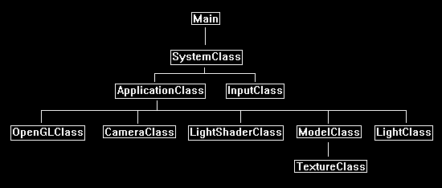
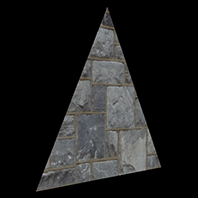

In this tutorial I will cover how to light 3D objects using diffuse lighting and OpenGL 4.0.
We will start with the code from the previous tutorial and modify it.
The type of diffuse lighting we will be implementing is called directional lighting.
Directional lighting is similar to how the Sun illuminates the Earth.
It is a light source that is a great distance away and based on the direction it is sending light you can determine the amount of light on any object.
However, unlike ambient lighting (another lighting model we will cover soon) it will not light up surfaces it does not directly touch.
I picked directional lighting to start with because it is very easy to debug visually.
Also, since it only requires a direction, the formula is simpler than the other types of diffuse lighting such as spot lights and point lights.
The implementation of diffuse lighting in OpenGL 4.0 is done with both vertex and pixel shaders.
Diffuse lighting requires just the light direction and a normal vector for any polygon that we want to light.
The direction is a single vector that you define, and you can calculate the normal for any polygon by using the three vertices that compose the polygon.
In this tutorial we will also implement the color of the diffuse light in the lighting equation.
Updated Framework
For this tutorial we will create a new class called LightClass which will represent and encapsulate the light sources in the scenes.
LightClass won't actually do anything other than hold the direction and color of the light.
We will also remove the TextureShaderClass and replace it with LightShaderClass which handles the light shading on the model.
With the addition of the new classes the frame work now looks like the following:

We will start the code section by looking at the GLSL light shader.
You will notice that the light shader is just an updated version of the texture shader from the previous tutorial with minor modifications.
I will cover the changes that have been made.
Light.vs
////////////////////////////////////////////////////////////////////////////////
// Filename: light.vs
////////////////////////////////////////////////////////////////////////////////
#version 400
There are a new input and output variables which are 3 float normal vectors.
The normal vector is used for calculating the amount of light by using the angle between the direction of the normal and the direction of the light.
/////////////////////
// INPUT VARIABLES //
/////////////////////
in vec3 inputPosition;
in vec2 inputTexCoord;
in vec3 inputNormal;
//////////////////////
// OUTPUT VARIABLES //
//////////////////////
out vec2 texCoord;
out vec3 normal;
///////////////////////
// UNIFORM VARIABLES //
///////////////////////
uniform mat4 worldMatrix;
uniform mat4 viewMatrix;
uniform mat4 projectionMatrix;
////////////////////////////////////////////////////////////////////////////////
// Vertex Shader
////////////////////////////////////////////////////////////////////////////////
void main(void)
{
// Calculate the position of the vertex against the world, view, and projection matrices.
gl_Position = vec4(inputPosition, 1.0f) * worldMatrix;
gl_Position = gl_Position * viewMatrix;
gl_Position = gl_Position * projectionMatrix;
// Store the texture coordinates for the pixel shader.
texCoord = inputTexCoord;
The normal vector for this vertex is calculated in world space and then normalized before being sent as input into the pixel shader.
We only calculate against the world matrix as we are just trying to find the lighting values in the 3D world space.
Note that sometimes these normals need to be re-normalized inside the pixel shader due to the interpolation that occurs.
// Calculate the normal vector against the world matrix only.
normal = inputNormal * mat3(worldMatrix);
// Normalize the normal vector.
normal = normalize(normal);
}
Light.ps
////////////////////////////////////////////////////////////////////////////////
// Filename: light.ps
////////////////////////////////////////////////////////////////////////////////
#version 400
The input normal vector variable is added here in the pixel shader.
/////////////////////
// INPUT VARIABLES //
/////////////////////
in vec2 texCoord;
in vec3 normal;
//////////////////////
// OUTPUT VARIABLES //
//////////////////////
out vec4 outputColor;
We have two new uniform variables.
These variables are used for sending as input the diffuse color and direction of the light.
These two variables will be set from values in the new LightClass object that are then sent in through the LightShaderClass.
///////////////////////
// UNIFORM VARIABLES //
///////////////////////
uniform sampler2D shaderTexture;
uniform vec3 lightDirection;
uniform vec4 diffuseLightColor;
////////////////////////////////////////////////////////////////////////////////
// Pixel Shader
////////////////////////////////////////////////////////////////////////////////
void main(void)
{
vec4 textureColor;
vec3 lightDir;
float lightIntensity;
// Sample the pixel color from the texture using the sampler at this texture coordinate location.
textureColor = texture(shaderTexture, texCoord);
This is where the lighting equation that was discussed earlier is now implemented.
The light intensity value is calculated as the dot product between the normal vector of triangle and the light direction vector.
The clamp function that is surrounding the equation is used to keep it in the 0.0f to 1.0f range.
We also combine the diffuse light color after the intensity has been calculated by multiplying the two values together and once again clamping them into the 0.0f to 1.0f range.
// Invert the light direction for calculations.
lightDir = -lightDirection;
// Calculate the amount of light on this pixel.
lightIntensity = clamp(dot(normal, lightDir), 0.0f, 1.0f);
// Determine the final amount of diffuse color based on the diffuse color combined with the light intensity.
outputColor = clamp((diffuseLightColor * lightIntensity), 0.0f, 1.0f);
And finally, the diffuse value of the light is combined with the texture pixel value to produce the color result.
// Multiply the texture pixel and the final diffuse color to get the final pixel color result.
outputColor = outputColor * textureColor;
}
Lightshaderclass.h
The new LightShaderClass is just the TextureShaderClass from the previous tutorials re-written slightly to incorporate lighting.
Also, the SetShaderParameters will also take as input the light values for color and direction.
////////////////////////////////////////////////////////////////////////////////
// Filename: lightshaderclass.h
////////////////////////////////////////////////////////////////////////////////
#ifndef _LIGHTSHADERCLASS_H_
#define _LIGHTSHADERCLASS_H_
//////////////
// INCLUDES //
//////////////
#include <iostream>
using namespace std;
///////////////////////
// MY CLASS INCLUDES //
///////////////////////
#include "openglclass.h"
////////////////////////////////////////////////////////////////////////////////
// Class name: LightShaderClass
////////////////////////////////////////////////////////////////////////////////
class LightShaderClass
{
public:
LightShaderClass();
LightShaderClass(const LightShaderClass&);
~LightShaderClass();
bool Initialize(OpenGLClass*);
void Shutdown();
bool SetShaderParameters(float*, float*, float*, float*, float*);
private:
bool InitializeShader(char*, char*);
void ShutdownShader();
char* LoadShaderSourceFile(char*);
void OutputShaderErrorMessage(unsigned int, char*);
void OutputLinkerErrorMessage(unsigned int);
private:
OpenGLClass* m_OpenGLPtr;
unsigned int m_vertexShader;
unsigned int m_fragmentShader;
unsigned int m_shaderProgram;
};
#endif
Lightshaderclass.cpp
////////////////////////////////////////////////////////////////////////////////
// Filename: lightshaderclass.cpp
////////////////////////////////////////////////////////////////////////////////
#include "lightshaderclass.h"
LightShaderClass::LightShaderClass()
{
m_OpenGLPtr = 0;
}
LightShaderClass::LightShaderClass(const LightShaderClass& other)
{
}
LightShaderClass::~LightShaderClass()
{
}
bool LightShaderClass::Initialize(OpenGLClass* OpenGL)
{
char vsFilename[128];
char psFilename[128];
bool result;
// Store the pointer to the OpenGL object.
m_OpenGLPtr = OpenGL;
The new light.vs and light.ps GLSL shader files are used as input to initialize the light shader.
// Set the location and names of the shader files.
strcpy(vsFilename, "../Engine/light.vs");
strcpy(psFilename, "../Engine/light.ps");
// Initialize the vertex and pixel shaders.
result = InitializeShader(vsFilename, psFilename);
if(!result)
{
return false;
}
return true;
}
void LightShaderClass::Shutdown()
{
// Shutdown the shader.
ShutdownShader();
// Release the pointer to the OpenGL object.
m_OpenGLPtr = 0;
return;
}
bool LightShaderClass::InitializeShader(char* vsFilename, char* fsFilename)
{
const char* vertexShaderBuffer;
const char* fragmentShaderBuffer;
int status;
// Load the vertex shader source file into a text buffer.
vertexShaderBuffer = LoadShaderSourceFile(vsFilename);
if(!vertexShaderBuffer)
{
return false;
}
// Load the fragment shader source file into a text buffer.
fragmentShaderBuffer = LoadShaderSourceFile(fsFilename);
if(!fragmentShaderBuffer)
{
return false;
}
// Create a vertex and fragment shader object.
m_vertexShader = m_OpenGLPtr->glCreateShader(GL_VERTEX_SHADER);
m_fragmentShader = m_OpenGLPtr->glCreateShader(GL_FRAGMENT_SHADER);
// Copy the shader source code strings into the vertex and fragment shader objects.
m_OpenGLPtr->glShaderSource(m_vertexShader, 1, &vertexShaderBuffer, NULL);
m_OpenGLPtr->glShaderSource(m_fragmentShader, 1, &fragmentShaderBuffer, NULL);
// Release the vertex and fragment shader buffers.
delete [] vertexShaderBuffer;
vertexShaderBuffer = 0;
delete [] fragmentShaderBuffer;
fragmentShaderBuffer = 0;
// Compile the shaders.
m_OpenGLPtr->glCompileShader(m_vertexShader);
m_OpenGLPtr->glCompileShader(m_fragmentShader);
// Check to see if the vertex shader compiled successfully.
m_OpenGLPtr->glGetShaderiv(m_vertexShader, GL_COMPILE_STATUS, &status);
if(status != 1)
{
// If it did not compile then write the syntax error message out to a text file for review.
OutputShaderErrorMessage(m_vertexShader, vsFilename);
return false;
}
// Check to see if the fragment shader compiled successfully.
m_OpenGLPtr->glGetShaderiv(m_fragmentShader, GL_COMPILE_STATUS, &status);
if(status != 1)
{
// If it did not compile then write the syntax error message out to a text file for review.
OutputShaderErrorMessage(m_fragmentShader, fsFilename);
return false;
}
// Create a shader program object.
m_shaderProgram = m_OpenGLPtr->glCreateProgram();
// Attach the vertex and fragment shader to the program object.
m_OpenGLPtr->glAttachShader(m_shaderProgram, m_vertexShader);
m_OpenGLPtr->glAttachShader(m_shaderProgram, m_fragmentShader);
We now add a third attribute for the normal vector that will be used for lighting in the GLSL light vertex shader.
// Bind the shader input variables.
m_OpenGLPtr->glBindAttribLocation(m_shaderProgram, 0, "inputPosition");
m_OpenGLPtr->glBindAttribLocation(m_shaderProgram, 1, "inputTexCoord");
m_OpenGLPtr->glBindAttribLocation(m_shaderProgram, 2, "inputNormal");
// Link the shader program.
m_OpenGLPtr->glLinkProgram(m_shaderProgram);
// Check the status of the link.
m_OpenGLPtr->glGetProgramiv(m_shaderProgram, GL_LINK_STATUS, &status);
if(status != 1)
{
// If it did not link then write the syntax error message out to a text file for review.
OutputLinkerErrorMessage(m_shaderProgram);
return false;
}
return true;
}
void LightShaderClass::ShutdownShader()
{
// Detach the vertex and fragment shaders from the program.
m_OpenGLPtr->glDetachShader(m_shaderProgram, m_vertexShader);
m_OpenGLPtr->glDetachShader(m_shaderProgram, m_fragmentShader);
// Delete the vertex and fragment shaders.
m_OpenGLPtr->glDeleteShader(m_vertexShader);
m_OpenGLPtr->glDeleteShader(m_fragmentShader);
// Delete the shader program.
m_OpenGLPtr->glDeleteProgram(m_shaderProgram);
return;
}
char* LightShaderClass::LoadShaderSourceFile(char* filename)
{
FILE* filePtr;
char* buffer;
long fileSize, count;
int error;
// Open the shader file for reading in text modee.
filePtr = fopen(filename, "r");
if(filePtr == NULL)
{
return 0;
}
// Go to the end of the file and get the size of the file.
fseek(filePtr, 0, SEEK_END);
fileSize = ftell(filePtr);
// Initialize the buffer to read the shader source file into, adding 1 for an extra null terminator.
buffer = new char[fileSize + 1];
// Return the file pointer back to the beginning of the file.
fseek(filePtr, 0, SEEK_SET);
// Read the shader text file into the buffer.
count = fread(buffer, 1, fileSize, filePtr);
if(count != fileSize)
{
return 0;
}
// Close the file.
error = fclose(filePtr);
if(error != 0)
{
return 0;
}
// Null terminate the buffer.
buffer[fileSize] = '\0';
return buffer;
}
void LightShaderClass::OutputShaderErrorMessage(unsigned int shaderId, char* shaderFilename)
{
long count;
int logSize, error;
char* infoLog;
FILE* filePtr;
// Get the size of the string containing the information log for the failed shader compilation message.
m_OpenGLPtr->glGetShaderiv(shaderId, GL_INFO_LOG_LENGTH, &logSize);
// Increment the size by one to handle also the null terminator.
logSize++;
// Create a char buffer to hold the info log.
infoLog = new char[logSize];
// Now retrieve the info log.
m_OpenGLPtr->glGetShaderInfoLog(shaderId, logSize, NULL, infoLog);
// Open a text file to write the error message to.
filePtr = fopen("shader-error.txt", "w");
if(filePtr == NULL)
{
cout << "Error opening shader error message output file." << endl;
return;
}
// Write out the error message.
count = fwrite(infoLog, sizeof(char), logSize, filePtr);
if(count != logSize)
{
cout << "Error writing shader error message output file." << endl;
return;
}
// Close the file.
error = fclose(filePtr);
if(error != 0)
{
cout << "Error closing shader error message output file." << endl;
return;
}
// Notify the user to check the text file for compile errors.
cout << "Error compiling shader. Check shader-error.txt for error message. Shader filename: " << shaderFilename << endl;
return;
}
void LightShaderClass::OutputLinkerErrorMessage(unsigned int programId)
{
long count;
FILE* filePtr;
int logSize, error;
char* infoLog;
// Get the size of the string containing the information log for the failed shader compilation message.
m_OpenGLPtr->glGetProgramiv(programId, GL_INFO_LOG_LENGTH, &logSize);
// Increment the size by one to handle also the null terminator.
logSize++;
// Create a char buffer to hold the info log.
infoLog = new char[logSize];
// Now retrieve the info log.
m_OpenGLPtr->glGetProgramInfoLog(programId, logSize, NULL, infoLog);
// Open a file to write the error message to.
filePtr = fopen("linker-error.txt", "w");
if(filePtr == NULL)
{
cout << "Error opening linker error message output file." << endl;
return;
}
// Write out the error message.
count = fwrite(infoLog, sizeof(char), logSize, filePtr);
if(count != logSize)
{
cout << "Error writing linker error message output file." << endl;
return;
}
// Close the file.
error = fclose(filePtr);
if(error != 0)
{
cout << "Error closing linker error message output file." << endl;
return;
}
// Pop a message up on the screen to notify the user to check the text file for linker errors.
cout << "Error linking shader program. Check linker-error.txt for message." << endl;
return;
}
The SetShaderParameters function now takes in lightDirection and diffuseLightColor as inputs.
bool LightShaderClass::SetShaderParameters(float* worldMatrix, float* viewMatrix, float* projectionMatrix, float* lightDirection, float* diffuseLightColor)
{
float tpWorldMatrix[16], tpViewMatrix[16], tpProjectionMatrix[16];
int location;
// Transpose the matrices to prepare them for the shader.
m_OpenGLPtr->MatrixTranspose(tpWorldMatrix, worldMatrix);
m_OpenGLPtr->MatrixTranspose(tpViewMatrix, viewMatrix);
m_OpenGLPtr->MatrixTranspose(tpProjectionMatrix, projectionMatrix);
// Install the shader program as part of the current rendering state.
m_OpenGLPtr->glUseProgram(m_shaderProgram);
// Set the world matrix in the vertex shader.
location = m_OpenGLPtr->glGetUniformLocation(m_shaderProgram, "worldMatrix");
if(location == -1)
{
cout << "World matrix not set." << endl;
}
m_OpenGLPtr ->glUniformMatrix4fv(location, 1, false, tpWorldMatrix);
// Set the view matrix in the vertex shader.
location = m_OpenGLPtr->glGetUniformLocation(m_shaderProgram, "viewMatrix");
if(location == -1)
{
cout << "View matrix not set." << endl;
}
m_OpenGLPtr->glUniformMatrix4fv(location, 1, false, tpViewMatrix);
// Set the projection matrix in the vertex shader.
location = m_OpenGLPtr->glGetUniformLocation(m_shaderProgram, "projectionMatrix");
if(location == -1)
{
cout << "Projection matrix not set." << endl;
}
m_OpenGLPtr->glUniformMatrix4fv(location, 1, false, tpProjectionMatrix);
// Set the texture in the pixel shader to use the data from the first texture unit.
location = m_OpenGLPtr->glGetUniformLocation(m_shaderProgram, "shaderTexture");
if(location == -1)
{
cout << "Shader texture not set." << endl;
}
m_OpenGLPtr->glUniform1i(location, 0);
The light direction and diffuse light color are set here in the pixel shader.
Note that lightDirection is a 3-float vector so we use glUniform3fv to set it.
And diffuseLightColor is a 4-float array so we use glUniform4fv to set it.
// Set the light direction in the pixel shader.
location = m_OpenGLPtr->glGetUniformLocation(m_shaderProgram, "lightDirection");
if(location == -1)
{
cout << "Light direction not set." << endl;
}
m_OpenGLPtr->glUniform3fv(location, 1, lightDirection);
// Set the diffuse light color in the pixel shader.
location = m_OpenGLPtr->glGetUniformLocation(m_shaderProgram, "diffuseLightColor");
if(location == -1)
{
cout << "Diffuse light color not set." << endl;
}
m_OpenGLPtr->glUniform4fv(location, 1, diffuseLightColor);
return true;
}
Modelclass.h
The ModelClass has been slightly modified to handle lighting components.
////////////////////////////////////////////////////////////////////////////////
// Filename: modelclass.h
////////////////////////////////////////////////////////////////////////////////
#ifndef _MODELCLASS_H_
#define _MODELCLASS_H_
//////////////
// INCLUDES //
//////////////
#include <fstream>
using namespace std;
///////////////////////
// MY CLASS INCLUDES //
///////////////////////
#include "textureclass.h"
////////////////////////////////////////////////////////////////////////////////
// Class Name: ModelClass
////////////////////////////////////////////////////////////////////////////////
class ModelClass
{
private:
The VertexType structure now has a normal vector to accommodate lighting.
struct VertexType
{
float x, y, z;
float tu, tv;
float nx, ny, nz;
};
public:
ModelClass();
ModelClass(const ModelClass&);
~ModelClass();
bool Initialize(OpenGLClass*, char*, bool);
void Shutdown();
void Render();
void SetTexture(unsigned int);
private:
bool InitializeBuffers();
void ShutdownBuffers();
void RenderBuffers();
bool LoadTexture(char*, bool);
void ReleaseTexture();
private:
OpenGLClass* m_OpenGLPtr;
int m_vertexCount, m_indexCount;
unsigned int m_vertexArrayId, m_vertexBufferId, m_indexBufferId;
TextureClass* m_Texture;
};
#endif
Modelclass.cpp
////////////////////////////////////////////////////////////////////////////////
// Filename: modelclass.cpp
////////////////////////////////////////////////////////////////////////////////
#include "modelclass.h"
ModelClass::ModelClass()
{
m_OpenGLPtr = 0;
m_Texture = 0;
}
ModelClass::ModelClass(const ModelClass& other)
{
}
ModelClass::~ModelClass()
{
}
bool ModelClass::Initialize(OpenGLClass* OpenGL, char* textureFilename, bool wrap)
{
bool result;
// Store a pointer to the OpenGL object.
m_OpenGLPtr = OpenGL;
// Initialize the vertex and index buffer that hold the geometry for the triangle.
result = InitializeBuffers();
if(!result)
{
return false;
}
// Load the texture for this model.
result = LoadTexture(textureFilename, wrap);
if(!result)
{
return false;
}
return true;
}
void ModelClass::Shutdown()
{
// Release the texture used for this model.
ReleaseTexture();
// Release the vertex and index buffers.
ShutdownBuffers();
// Release the pointer to the OpenGL object.
m_OpenGLPtr = 0;
return;
}
void ModelClass::Render()
{
// Set the texture for the model.
m_Texture->SetTexture(m_OpenGLPtr);
// Put the vertex and index buffers on the graphics pipeline to prepare them for drawing.
RenderBuffers();
return;
}
bool ModelClass::InitializeBuffers()
{
VertexType* vertices;
unsigned int* indices;
// Set the number of vertices in the vertex array.
m_vertexCount = 3;
// Set the number of indices in the index array.
m_indexCount = 3;
// Create the vertex array.
vertices = new VertexType[m_vertexCount];
// Create the index array.
indices = new unsigned int[m_indexCount];
The primary change to the InitializeBuffers function is here in the vertex setup.
Each vertex now has normals associated with it for lighting calculations.
The normal is a line that is perpendicular to the face of the polygon so that the exact direction the face is pointing can be calculated.
For simplicity purposes I set the normal for each vertex along the Z axis by setting each Z component to -1.0f which makes the normal point towards the viewer.
// Load the vertex array with data.
// Bottom left.
vertices[0].x = -1.0f; // Position.
vertices[0].y = -1.0f;
vertices[0].z = 0.0f;
vertices[0].tu = 0.0f; // Texture
vertices[0].tv = 0.0f;
vertices[0].nx = 0.0f; // Normal.
vertices[0].ny = 0.0f;
vertices[0].nz = -1.0f;
// Top middle.
vertices[1].x = 0.0f; // Position.
vertices[1].y = 1.0f;
vertices[1].z = 0.0f;
vertices[1].tu = 0.5f; // Texture
vertices[1].tv = 1.0f;
vertices[1].nx = 0.0f; // Normal.
vertices[1].ny = 0.0f;
vertices[1].nz = -1.0f;
// Bottom right.
vertices[2].x = 1.0f; // Position.
vertices[2].y = -1.0f;
vertices[2].z = 0.0f;
vertices[2].tu = 1.0f; // Texture
vertices[2].tv = 0.0f;
vertices[2].nx = 0.0f; // Normal.
vertices[2].ny = 0.0f;
vertices[2].nz = -1.0f;
// Load the index array with data.
indices[0] = 0; // Bottom left.
indices[1] = 1; // Top middle.
indices[2] = 2; // Bottom right.
// Allocate an OpenGL vertex array object.
m_OpenGLPtr->glGenVertexArrays(1, &m_vertexArrayId);
// Bind the vertex array object to store all the buffers and vertex attributes we create here.
m_OpenGLPtr->glBindVertexArray(m_vertexArrayId);
// Generate an ID for the vertex buffer.
m_OpenGLPtr->glGenBuffers(1, &m_vertexBufferId);
// Bind the vertex buffer and load the vertex (position and color) data into the vertex buffer.
m_OpenGLPtr->glBindBuffer(GL_ARRAY_BUFFER, m_vertexBufferId);
m_OpenGLPtr->glBufferData(GL_ARRAY_BUFFER, m_vertexCount * sizeof(VertexType), vertices, GL_STATIC_DRAW);
The next major change is that we enable the normal vertex attribute array.
// Enable the three vertex array attributes.
m_OpenGLPtr->glEnableVertexAttribArray(0); // Vertex position.
m_OpenGLPtr->glEnableVertexAttribArray(1); // Texture coordinates.
m_OpenGLPtr->glEnableVertexAttribArray(2); // Normals
// Specify the location and format of the position portion of the vertex buffer.
m_OpenGLPtr->glVertexAttribPointer(0, 3, GL_FLOAT, false, sizeof(VertexType), 0);
// Specify the location and format of the texture coordinates portion of the vertex buffer.
m_OpenGLPtr->glVertexAttribPointer(1, 2, GL_FLOAT, false, sizeof(VertexType), (unsigned char*)NULL + (3 * sizeof(float)));
We also specify that the position of the normal vector is the 6th, 7th, and 8th float in the buffer.
// Specify the location and format of the normal vector portion of the vertex buffer.
m_OpenGLPtr->glVertexAttribPointer(2, 3, GL_FLOAT, false, sizeof(VertexType), (unsigned char*)NULL + (5 * sizeof(float)));
// Generate an ID for the index buffer.
m_OpenGLPtr->glGenBuffers(1, &m_indexBufferId);
// Bind the index buffer and load the index data into it.
m_OpenGLPtr->glBindBuffer(GL_ELEMENT_ARRAY_BUFFER, m_indexBufferId);
m_OpenGLPtr->glBufferData(GL_ELEMENT_ARRAY_BUFFER, m_indexCount* sizeof(unsigned int), indices, GL_STATIC_DRAW);
// Now that the buffers have been loaded we can release the array data.
delete [] vertices;
vertices = 0;
delete [] indices;
indices = 0;
return true;
}
void ModelClass::ShutdownBuffers()
{
// Release the vertex array object.
m_OpenGLPtr->glBindVertexArray(0);
m_OpenGLPtr->glDeleteVertexArrays(1, &m_vertexArrayId);
// Release the vertex buffer.
m_OpenGLPtr->glBindBuffer(GL_ARRAY_BUFFER, 0);
m_OpenGLPtr->glDeleteBuffers(1, &m_vertexBufferId);
// Release the index buffer.
m_OpenGLPtr->glBindBuffer(GL_ELEMENT_ARRAY_BUFFER, 0);
m_OpenGLPtr->glDeleteBuffers(1, &m_indexBufferId);
return;
}
void ModelClass::RenderBuffers()
{
// Bind the vertex array object that stored all the information about the vertex and index buffers.
m_OpenGLPtr->glBindVertexArray(m_vertexArrayId);
// Render the vertex buffer using the index buffer.
glDrawElements(GL_TRIANGLES, m_indexCount, GL_UNSIGNED_INT, 0);
return;
}
bool ModelClass::LoadTexture(char* textureFilename, bool wrap)
{
bool result;
// Create and initialize the texture object.
m_Texture = new TextureClass;
result = m_Texture->Initialize(m_OpenGLPtr, textureFilename, wrap);
if(!result)
{
return false;
}
return true;
}
void ModelClass::ReleaseTexture()
{
// Release the texture object.
if(m_Texture)
{
m_Texture->Shutdown();
delete m_Texture;
m_Texture = 0;
}
return;
}
void ModelClass::SetTexture(unsigned int textureUnit)
{
// Set the texture for the model.
m_Texture->SetTexture(m_OpenGLPtr, textureUnit);
return;
}
Lightclass.h
Now we will look at the new light class which is very simple.
Its purpose is only to maintain the direction and color of lights.
////////////////////////////////////////////////////////////////////////////////
// Filename: lightclass.h
////////////////////////////////////////////////////////////////////////////////
#ifndef _LIGHTCLASS_H_
#define _LIGHTCLASS_H_
////////////////////////////////////////////////////////////////////////////////
// Class name: LightClass
////////////////////////////////////////////////////////////////////////////////
class LightClass
{
public:
LightClass();
LightClass(const LightClass&);
~LightClass();
void SetDiffuseColor(float, float, float, float);
void SetDirection(float, float, float);
void GetDiffuseColor(float*);
void GetDirection(float*);
private:
float m_diffuseColor[4];
float m_direction[3];
};
#endif
Lightclass.cpp
////////////////////////////////////////////////////////////////////////////////
// Filename: lightclass.cpp
////////////////////////////////////////////////////////////////////////////////
#include "lightclass.h"
LightClass::LightClass()
{
}
LightClass::LightClass(const LightClass& other)
{
}
LightClass::~LightClass()
{
}
void LightClass::SetDiffuseColor(float red, float green, float blue, float alpha)
{
m_diffuseColor[0] = red;
m_diffuseColor[1] = green;
m_diffuseColor[2] = blue;
m_diffuseColor[3] = alpha;
return;
}
void LightClass::SetDirection(float x, float y, float z)
{
m_direction[0] = x;
m_direction[1] = y;
m_direction[2] = z;
return;
}
void LightClass::GetDiffuseColor(float* color)
{
color[0] = m_diffuseColor[0];
color[1] = m_diffuseColor[1];
color[2] = m_diffuseColor[2];
color[3] = m_diffuseColor[3];
return;
}
void LightClass::GetDirection(float* direction)
{
direction[0] = m_direction[0];
direction[1] = m_direction[1];
direction[2] = m_direction[2];
return;
}
Applicationclass.h
////////////////////////////////////////////////////////////////////////////////
// Filename: applicationclass.h
////////////////////////////////////////////////////////////////////////////////
#ifndef _APPLICATIONCLASS_H_
#define _APPLICATIONCLASS_H_
/////////////
// GLOBALS //
/////////////
const bool FULL_SCREEN = false;
const bool VSYNC_ENABLED = true;
const float SCREEN_NEAR = 0.3f;
const float SCREEN_DEPTH = 1000.0f;
///////////////////////
// MY CLASS INCLUDES //
///////////////////////
#include "inputclass.h"
#include "openglclass.h"
#include "modelclass.h"
#include "cameraclass.h"
The ApplicationClass now has two new includes for the LightShaderClass and the LightClass.
#include "lightshaderclass.h"
#include "lightclass.h"
////////////////////////////////////////////////////////////////////////////////
// Class Name: ApplicationClass
////////////////////////////////////////////////////////////////////////////////
class ApplicationClass
{
public:
ApplicationClass();
ApplicationClass(const ApplicationClass&);
~ApplicationClass();
bool Initialize(Display*, Window, int, int);
void Shutdown();
bool Frame(InputClass*);
private:
Render now takes a float value as input.
bool Render(float);
private:
OpenGLClass* m_OpenGL;
ModelClass* m_Model;
CameraClass* m_Camera;
There are two new private variables for the light shader and the light object.
LightShaderClass* m_LightShader;
LightClass* m_Light;
};
#endif
Applicationclass.cpp
////////////////////////////////////////////////////////////////////////////////
// Filename: applicationclass.cpp
////////////////////////////////////////////////////////////////////////////////
#include "applicationclass.h"
ApplicationClass::ApplicationClass()
{
m_OpenGL = 0;
m_Model = 0;
m_Camera = 0;
The light shader and light object are set to null in the class constructor.
m_LightShader = 0;
m_Light = 0;
}
ApplicationClass::ApplicationClass(const ApplicationClass& other)
{
}
ApplicationClass::~ApplicationClass()
{
}
bool ApplicationClass::Initialize(Display* display, Window win, int screenWidth, int screenHeight)
{
char textureFilename[128];
bool result;
// Create and initialize the OpenGL object.
m_OpenGL = new OpenGLClass;
result = m_OpenGL->Initialize(display, win, screenWidth, screenHeight, SCREEN_NEAR, SCREEN_DEPTH, VSYNC_ENABLED);
if(!result)
{
cout << "Error: Could not initialize the OpenGL object." << endl;
return false;
}
// Create and initialize the camera object.
m_Camera = new CameraClass;
m_Camera->SetPosition(0.0f, 0.0f, -5.0f);
m_Camera->Render();
// Set the file name of the texture.
strcpy(textureFilename, "../Engine/data/stone01.tga");
// Create and initialize the model object.
m_Model = new ModelClass;
result = m_Model->Initialize(m_OpenGL, textureFilename, false);
if(!result)
{
cout << "Error: Could not initialize the model object." << endl;
return false;
}
The new light shader object is created and initialized here.
// Create and initialize the light shader object.
m_LightShader = new LightShaderClass;
result = m_LightShader->Initialize(m_OpenGL);
if(!result)
{
cout << "Error: Could not initialize the light shader object." << endl;
return false;
}
The new light object is created and initialized here.
The color of the light is set to white and the light direction is set to point down the positive Z axis into the screen.
// Create and initialize the light object.
m_Light = new LightClass;
m_Light->SetDiffuseColor(1.0f, 1.0f, 1.0f, 1.0f);
m_Light->SetDirection(0.0f, 0.0f, 1.0f);
return true;
}
void ApplicationClass::Shutdown()
{
The Shutdown function now releases the new light and light shader objects.
// Release the light object.
if(m_Light)
{
delete m_Light;
m_Light = 0;
}
// Release the light shader object.
if(m_LightShader)
{
m_LightShader->Shutdown();
delete m_LightShader;
m_LightShader = 0;
}
// Release the model object.
if(m_Model)
{
m_Model->Shutdown();
delete m_Model;
m_Model = 0;
}
// Release the camera object.
if(m_Camera)
{
delete m_Camera;
m_Camera = 0;
}
// Release the OpenGL object.
if(m_OpenGL)
{
m_OpenGL->Shutdown();
delete m_OpenGL;
m_OpenGL = 0;
}
return;
}
bool ApplicationClass::Frame(InputClass* Input)
{
We add a new static variable to hold an updated rotation value.
static float rotation = 360.0f;
bool result;
// Check if the escape key has been pressed, if so quit.
if(Input->IsEscapePressed() == true)
{
return false;
}
Each frame we update the rotation value.
We then send this rotation value into the Render function so that we can rotate our triangle model to assist in seeing how the light effect works.
// Update the rotation variable each frame.
rotation -= 0.0174532925f * 1.0f;
if(rotation <= 0.0f)
{
rotation += 360.0f;
}
// Render the graphics scene.
result = Render(rotation);
if(!result)
{
return false;
}
return true;
}
bool ApplicationClass::Render(float rotation)
{
float worldMatrix[16], viewMatrix[16], projectionMatrix[16];
float diffuseLightColor[4], lightDirection[3];
bool result
// Clear the buffers to begin the scene.
m_OpenGL->BeginScene(0.0f, 0.0f, 0.0f, 1.0f);
// Get the world, view, and projection matrices from the opengl and camera objects.
m_OpenGL->GetWorldMatrix(worldMatrix);
m_Camera->GetViewMatrix(viewMatrix);
m_OpenGL->GetProjectionMatrix(projectionMatrix);
Here we rotate the world matrix by the rotation value so that when we render the triangle using this updated world matrix it will spin the triangle by the rotation amount.
// Rotate the world matrix by the rotation value so that the triangle will spin.
m_OpenGL->MatrixRotationY(worldMatrix, rotation);
We obtain the direction and diffuse color of the light here.
// Get the light properties.
m_Light->GetDirection(lightDirection);
m_Light->GetDiffuseColor(diffuseLightColor);
The light shader is called here to render the triangle. We send the diffuse light color and light direction into the SetShaderParameters function so that the shader has access to those values.
// Set the light shader as the current shader program and set the matrices that it will use for rendering.
result = m_LightShader->SetShaderParameters(worldMatrix, viewMatrix, projectionMatrix, lightDirection, diffuseLightColor);
if(!result)
{
return false;
}
// Set the texture for the model in the pixel shader.
m_Model->SetTexture(0);
// Render the model.
m_Model->Render();
// Present the rendered scene to the screen.
m_OpenGL->EndScene();
return true;
}
Summary
With a few changes to the code, we were able to implement some basic directional lighting.
Make sure you understand how normal vectors work and why they are important to calculating lighting on polygon faces.
Note that the back of the spinning triangle will not light up since we have back face culling enabled in our OpenGLClass, and the polygon normals only point in one direction.

To Do Exercises
1. Re-compile the project and ensure you get a spinning textured triangle that is being illuminated by a white light. Press escape to quit.
2. Change the color of the light to green.
3. Change the direction of the light to go down the positive and the negative X axis. You might want to change the speed of the rotation also.
4. Comment out the final texture combine in the pixel shader so that the shaderTexture is no longer used and you should see the lighting effect without the texture.
Remember that SetShaderParameters will return false since the texture is not used, so you will need to ignore that return value for testing this.
Source Code
Source Code and Data Files: gl4linuxtut06_src.tar.gz